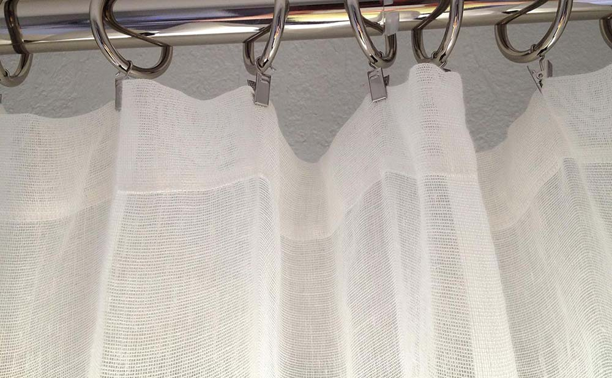

{kind=link}
Myriad Curtain
white
64" wide x 96" $140
These sheer, almost weightless curtain panels are made from an off-white, open-weave pure linen 66" wide – shrinks to 64" after washing. I like to allow one 64" panel per 36" of window, or only a little less, to be on the generous side, as the fabric is so light and airy.
I always recommend ring-clips, not only to be able to draw the curtains easily, but you can adjust the length by folding the top over if necessary.
Custom sizing is possible, email me for a quote.
I also make curtains in Orkney, Smooth, and St Barts linen.

{kind=link}
"I needed a simple light curtain to help soften a window in our entryway... myriad linen curtain was perfect! Light & airy to softly move in the breeze but also softens what was a difficult view of a small garden outside the window." – Kerry
{kind=link}
"I must apologise for not writing sooner to thank you for such speedy delivery of my Myriad curtains, they are absolutely gorgeous and I just love them! I have been waiting three weeks for my curtain clips to arrive to be able to put them up, and today was the day of their arrival, and so my husband has been working this afternoon to install the curtains. And as you can see by the photos that I am sending they look beautiful. I thought I might only need two on my big window, but I think it would look better if I had another two, just to give it that nice fullness. The door also needs another one, so after I send the pics to you I shall order three more. I do hope you like how the curtains look. Thank you once again. I look forward to receiving my next shipment from you. Kind regards" – Heather
"Purchased Myriad (for bathroom) and Orkney curtain panels (for living room), Orkney natural duvets, and Smooth white linen sheets & pillow slips (for master bedroom). We live on a farm in a very rural, natural area in Oklahoma. We recently had a major flood that destroyed everything on the inside of our home. We are still in the process of remodeling. Rough Linen is perfect for our intended decor!" – Clara Mitchell